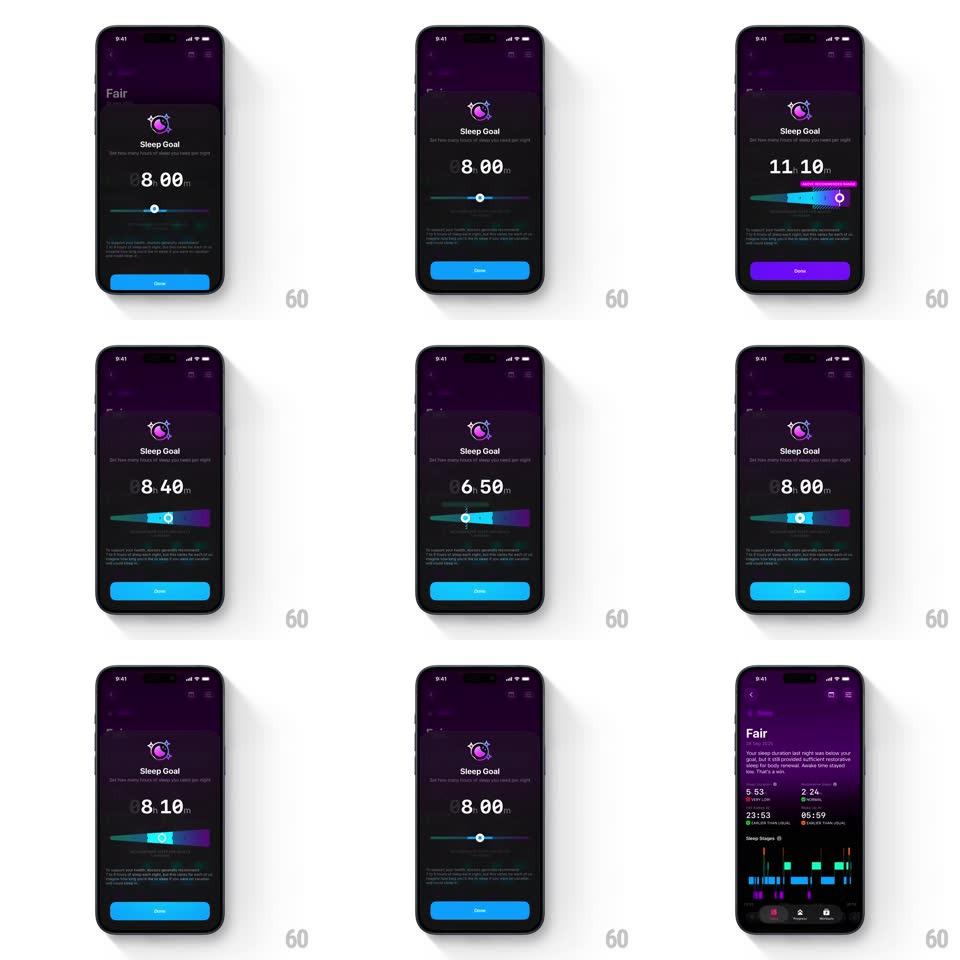

Media
Frame-by-frame

Rebuild this interaction 1:1: The Outsiders' sleep goal slider - dragging the thumb live-updates the big time value while the track gradient and the Done button recolor by range: blue in the middle, purple at high values, teal-green at low values, with a hatched warning fill at the extremes.

Rebuild this interaction 1:1: The Outsiders' sleep goal slider - dragging the thumb live-updates the big time value while the track gradient and the Done button recolor by range: blue in the middle, purple at high values, teal-green at low values, with a hatched warning fill at the extremes.
## Integration
Integration: stack-agnostic spec - springs given as stiffness/damping, timed motions as duration + curve; map every value to your framework and animation library of choice.
## Scene
Dark "Sleep Goal" sheet over the Today screen: moon icon, title, subline, a huge time readout ("8 00m"), a horizontal slider with a blue-to-purple gradient track, a small moon icon at the left end, and a full-width "Done" button below.
## Motion spec
Pattern: range-themed slider, gesture-driven.
- Drag: the thumb tracks 1:1; the readout updates live in 10-minute steps, digits rolling vertically (120ms per change).
- Theming: the track's filled portion and the Done button crossfade through the range palette - teal-green at the low end, blue mid, purple at the high end (color follows thumb position continuously, 150ms catch-up after release).
- Extremes: past the healthy range the fill gains a hatched/striped warning texture and the thumb glows (200ms in/out).
- Release: the thumb settles with a soft spring (~400/25) and haptic tick per 10-minute step.
- Done: the sheet dismisses down (300ms) into the sleep detail ("Fair") screen.
## Calibration
- Colors interpolate with position - a mid-drag thumb shows a blended color, not a snapped one.
- The readout never lags the thumb by more than one step.
## Reduced motion
Theming still applies; digits change without rolling and no thumb glow.
## Don't miss
- The button recoloring with the slider is the signature - it must track the same palette.
- The hatched warning texture appears only outside the recommended range.